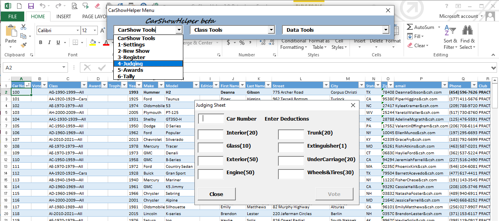

The CarShowHelper Excel Application was created to accurately
record and manage the data needed to run a car show.
Installation: CarShowHelper3.0.1_Beta.xlsm is available for
download here.
Special Note: Downloading Excel add-ins and macro enabled
workbooks can be dangerous due to the possibility of embedded malware.
Newer versions of Excel provide significant protection. Please take
appropriate precautions before enabling any downloaded Excel workbook.
This file size after download should be 4,296,705 bytes and
4,300,800 bytes on disk.

Car Show Helper Registration Sheet with Main Menu at
top and a simple judging form.
CarShowHelper has two main worksheets, "Registration" and "Contacts"
and a menu of tools for data entry, analysis, and record keeping. It
may take some time to become familiar with its features and
limitations. New users can run the Make Practice Data
and Simulate Votes "learning" tools to explore and get
comfortable with CarShowHelper without worry. Advanced users can access
"Hidden" worksheets to create and edit custom car classification
schedules, judging sheets, and a list of car makes and models. Below is
a brief summary of CarShowHelper's Menus.
New Show - Prepare registration sheet for new
show. Options for the old show; archive, export to contacts, clear.
Registration- Displays registration form,
assigns car numbers, classifies, searches contacts for auto-fill.
Judging - Displays user-defined judging sheet
for manual data entry with error checking.
Awards - Optional, Assigns user-defined
special awards e.g. "Best of Show" to selected cars. Removes special
awards cars from regular tally.
Tally - Sorts and filters the Registration
sheet to display show winners. Exports/prints show winner report minus
personal info.
Class Tools Menu
Rename Award - Renames a user defined special
award. Updates registration sheet.
Create Class Table (advanced) - Special tool
for creating a car classification schedule. A schedule is selectable
in the Settings menu.
Delete Class Table - Removes an unwanted
classification schedule and deletes it from the Settings menu.
Rename Class
- Edit a car main and sub-class,
start and end year, and description in the active classification
schedule. Updates registration sheet.
Combine Classes
- Combines two car classes in
the active classification schedule into one with a new main and
sub-class, start and end year, and description. Updates registration
sheet.
Split Class
- Splits one car class in the
active classification schedule into two with a new main and
sub-classes, start and end years, and descriptions. Updates
registration sheet.
Data Tools Menu
Import/Export Table - A general purpose
import tool for copying external spreadsheet data into CarShowHelper,
for example, reports generated by on-line registration.
Edit Show Table - Edit registration or
contacts sheet entries.
Beautify Table - Apply standard formatting to
a registration or contacts sheet.
Mark Bad E-mail Addresses - Checks
registration or contacts sheet for incorrectly formed email addresses.
It does not validate addresses.
Auto Update Contact Info - Automatically
removes high duplicate score entries from the contacts sheet. Use with
caution.
Sync Registration and Contacts -
Completes/updates blank/old fields in registration and contacts sheets
if Year, Make, Model, FirstName, and LastName are the same in both.
Simple Mail Merge - Creates a filtered email
and/or USPS mailing list suitable for Microsoft Office Mail merge.
Make Practice Data (learning) - Appends
simulated registrants to the registration sheet. Zip codes are
authentic. The Club field is set to PRACTICE
Simulate Votes (learning) - Simulates judging
scores using typical judging statistics. Use to score practice data to
learn how to use CarShowHelper.
Make Car Numbers - Appends sequential car
numbers to the "Car No" field beginning with Setting/First Car No. or
the highest registered car number.
Plot Travel Distances - Uses contacts sheet
Zip codes to compute the "as the crow flies" distance to any Zip code.
Evaluate how far prior registrants are from a proposed show location.
Print Registration Slips - Prints traditional
registration slips to provide some compatibility with paper show
systems.
Show Data Sheets - Normally only
Registration and Contacts sheets are visible. UnHides hidden Classes,
Archive, Judging, Makes&Models, Zip Data, Misc Data, and Settings
worksheets.
Hide Data Sheets - Shows only the
Registration and Contacts sheets.